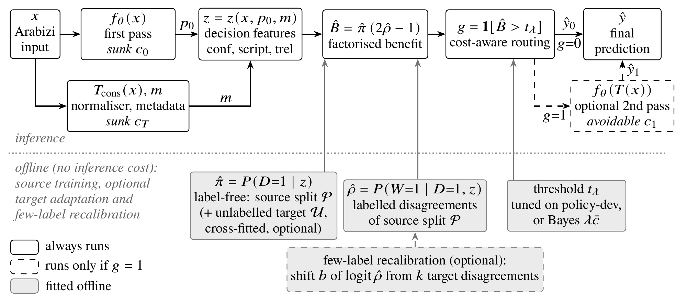
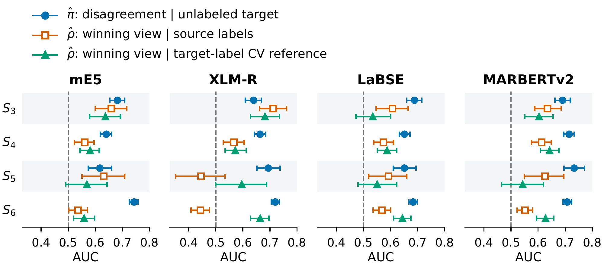

SelectNorm · 2026
SelectNorm: A Disagreement-Factorized Analysis of Per-Input Normalization for North African Arabizi with Frozen Encoders
SubmittedPaper submitted to an international conference.
A sentiment classifier trained on Arabic-script text can read Latin-script Arabizi as written or transliterated into Arabic script, and the better view varies from input to input. SelectNorm casts this per-input choice as a cost-aware Bayes decision in which the expected benefit of normalizing factorizes into a disagreement probability, estimable without labels, and a conditional advantage, which needs labels only on disagreements.
Code: MIT licence. The paper and its figures: all rights reserved by the authors until publication. No corpus text is distributed; no DOI yet.
Preprint
SelectNorm: A Disagreement-Factorized Analysis of Per-Input Normalization for North African Arabizi with Frozen Encoders
SubmittedPaper submitted to an international conference.
Preprint, submitted version, not peer-reviewed.
Overview
Problem
Transliterating Arabizi into Arabic script repairs some inputs and damages others (French and English tokens, negation, rare spellings, dialect differences), so unconditional normalization can help one corpus and hurt another.
Approach
For binary labels, the expected benefit of classifying the normalized view factorizes exactly as B(z) = π(z)(2ρ(z) − 1): π is the probability that the two views disagree, estimable without labels; ρ is the probability that the normalized view wins a disagreement. The first encoder pass and the normalizer are sunk costs, paid before the decision; only the second pass is avoidable. The cost-aware rule normalizes when the estimated benefit exceeds the weighted avoidable cost.

Evaluation protocol
- Encoders
- Four frozen encoders with pinned revisions: XLM-R base, multilingual-E5 base, LaBSE and MARBERTv2, with linear heads.
- Training
- Classifier trained on Arabic-script Tunisian data (TSAC); router trained and its threshold selected on a separate Latin-script Tunisian pool.
- Test sets
- TSAC-Lat and TUNIZI (Tunisian), NArabizi (Algerian), MYC-Lat (Moroccan).
- Systems
- Original input, always normalize, random routing, confidence routing, direct-gain routing, SelectNorm (source and adapted), two-view ensemble, oracle (reference only).
- Statistics
- Seed means; paired 95% bootstrap intervals, Holm-adjusted tests; measured CPU timings for costs.
Main results
- Normalization improves macro-F1 by 2.3 to 18.6 points on the Tunisian and Algerian sets; removing the normalizer's safeguards costs 4.2 to 6.2 points (mE5).
- SelectNorm performs comparably to a direct-gain router: paired 95% intervals within [−0.63, +0.58] points.
- In measured time, SelectNorm needs 1.31 to 1.97 encoder passes against 1.91 to 2.07 for the two-view ensemble, though more than a single view.
- Disagreements are predictable without labels (AUC 0.62 to 0.74), whereas the winning view is the harder quantity to estimate, even with target labels.

Source: abstract of the paper.
Role and collaborations
Collaborations:
- Salah ZriguiInria, Université Grenoble Alpes, France
- Henri NicolasLaBRI, University of Bordeaux, France
- Mounir ZriguiRLANTIS, University of Monastir, Tunisia
- Imane GuellilUniversity of Birmingham, United Kingdom
- Chadi HelweLebanese American University, Lebanon
Cite this work
@unpublished{jaballi2026selectnorm,
author = {Jaballi, Samawel and others},
title = {{SelectNorm}: A Disagreement-Factorized Analysis of Per-Input Normalization for North African Arabizi with Frozen Encoders},
year = {2026},
url = {https://samaweljaballi.github.io/research/pdf/selectnorm-manuscript.pdf},
note = {Submitted}
}